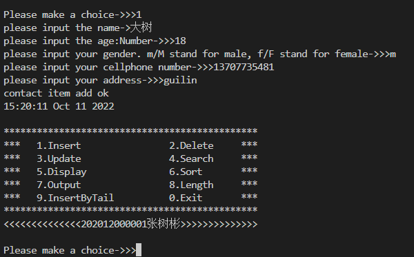
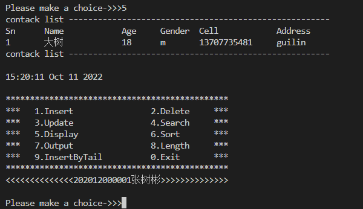
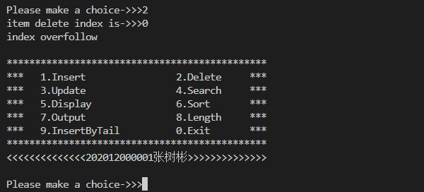
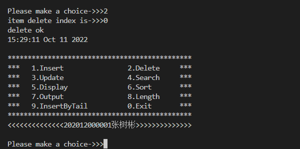
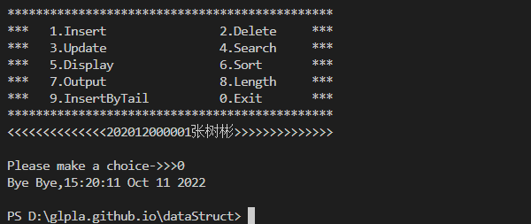

Contact
- 一、实验目的
- 1. 加深理解线性表的顺序表示与链式表示的意义和区别，掌握用它们表示时各基本操作的设计与实现；
- 2. 学会定义线性表的顺序存储类型和链式存储类型，实现对线性表的一些基本操作和具体的函数定义；
- 3. 掌握线性表的基本操作（初始化、建立、插入、删除、遍历等）；
- 4. 在实际应用背景下能够适当选择顺序存储和链式存储；
- 二、实验内容和要求
- 请使用线性表的链表实现通信录，具备以下功能：
- . 通信录的数据定义：每个同学都有名片，包含：学号、昵称、性别、年龄、生日、星座、所在地等信息；
- . 通讯录的建立；
- . 通讯录的增加和删除；
- . 通信录的查询；
- . 在此基础上实现你设计的其它附加功能；
- 三、实验环境及材料
- 见页面底部资源库，选择熟悉的开发环境完成；
- 四、实验方法和步骤
- 1. 开发：按照实验内容要求编写相应程序代码并调试运行，完成单链表的创建、插入、删除、显示、查找等操作；
- 2. 演示：过程如下
- 2.1. 创建一个通信录群；默认有1个成员，你自己；
- 2.2. 显示该通讯录中所有同学；
- 2.3. 根据学号查找同学信息并显示；
- 2.4. 插入一个新同学；
- 2.5. 删除会员的信息；
- 2.6. 统计通讯录中同学的个数；
- 2.7. 退出；
- 五、实验结果
- 1. 程序功能是否完成；
- 2. 程序调试运行中出现的错误信息原因分析；
- 六、实验总结
- 从实验过程，体会链表的特点，不少于200字；
-

- ↑ 欢迎界面 ↑
- 
- ↑ 增加用户 ↑
- 
- ↑ 显示用户 ↑
- 
- ↑ 删除用户 ↑
- 
- ↑ 删除用户 ↑
- 
- ↑ 退出界面 ↑

参考代码-主文件
#include <stdio.h>
#include <stdlib.h>
#include "contact.h"
void menu(void);
int main(void)
{
int option, len;
printf("\nWelcome\n");
Contact *contact = Init();
do
{
menu();
printf("Please make a choice->>>");
scanf("%d", &option);
switch (option)
{
case Add:
AddByHead(contact);
break;
case Delete:
DeleteByIndex(contact);
break;
case Update:
UpdateByIndex(contact);
break;
case Search:
SearchByName(contact);
break;
case Print:
Display(contact);
break;
case Sort:
SortByAge(contact);
break;
case Output:
OutputToFile(contact);
break;
case LengthOfContact:
len = Length(contact);
printf("lenght of current contact is %d\n", len);
printf("%s %s\n\n", __TIME__, __DATE__);
break;
case AddByTail:
OutputToFile(contact);
break;
case Exit:
printf("Bye Bye\n");
printf("%s %s\n\n", __TIME__, __DATE__);
exit(0);
break;
default:
printf("Bye Bye\n");
printf("%s %s\n\n", __TIME__, __DATE__);
exit(0);
break;
}
} while (1);
return 0;
}
void menu(void)
{
printf("************************************************\n");
printf("****** 1. Insert*************** 2. Delete*******\n");
printf("****** 3. Update*************** 4. Search*******\n");
printf("****** 5. Display************** 6. Sort*********\n");
printf("****** 7. Output*************** 8. Length*******\n");
printf("****** 9. InsertByTail********* 0. Exit*********\n");
printf("************************************************\n");
printf("<<<<<<<<<<<<<<<<202012000001张树彬>>>>>>>>>>>>>>>>\n\n");
}
参考代码-头文件
#include <stdio.h>
#include <stdlib.h>
enum options
{
Exit,
Add,
Delete,
Update,
Search,
Print,
Sort,
Output,
LengthOfContact,
AddByTail
};
//字符串成员变量请使用字符数组，最好不要使用指针，否则你要申请空间；
typedef struct
{
char name[8];
int age;
char gender;
char cell[12];
char address[12];
} Student;
typedef struct stuNode
{
Student student;
struct stuNode *next;
} Node, Contact;
//AddByHead函数使用到输出函数，所以要先声明该函数；
//如果没有函数使用，就可以不声明；
int Length(Contact *contact);
void Display(Contact *contact);
Contact *Init()
{
Node *head = (Node *)malloc(sizeof(Node));
head->next = NULL;
printf("%s %s\n", __TIME__, __DATE__);
return head;
}
int Length(Contact *contact)
{
int len = 0;
Node *head = contact->next;
while (head)
{
len++;
head = head->next;
}
return len;
}
//头插法
void AddByHead(Contact *contact)
{
Node *node = (Node *)malloc(sizeof(Node));
printf("please input the name->");
// char[]可以直接输入，因为数组名就是地址
// int和char需要使用取地址符&，输入到地址对应的内存单元
scanf("%s", node->student.name);
//清空缓冲区：避免回车、换行、空格等空白字符被后面的数据获取；以下类似
fflush(stdin);
printf("please input the age:Number->>>");
scanf("%d", &(node->student.age));
fflush(stdin);
printf("please input your gender. m/M stand for male, f/F stand for female->>>");
scanf("%c", &(node->student.gender));
fflush(stdin);
printf("please input your cellphone number->>>");
scanf("%s", node->student.cell);
fflush(stdin);
printf("please input your address->>>");
scanf("%s", node->student.address);
//清空缓冲区，避免残留的内容被当作选项option的输入
fflush(stdin);
//头插法
node->next = contact->next;
contact->next = node;
printf("contact item add ok\n");
printf("%s %s\n\n", __TIME__, __DATE__);
return;
}
void Display(Contact *contact)
{
Node *node = contact->next;
int i = 0;
printf("contack list ------------------------------------------------------\n");
printf("%-3s\t%-8s\t%-3s\t%-3s\t%-15s\t%-30s\n", "Sn", "Name", "Age", "Gender", "Cell", "Address");
while (node)
{
printf("%-3d\t%-8s\t%-3d\t%-3c\t%-15s\t%-30s\n", i + 1, node->student.name, node->student.age, node->student.gender, node->student.cell, node->student.address);
node = node->next;
i++;
}
printf("contack list ------------------------------------------------------\n\n");
printf("%s %s\n\n", __TIME__, __DATE__);
}
void DeleteByIndex(Contact *contact)
{
int ind, i;
int len = Length(contact);
printf("item delete index is->>>");
scanf("%d", &ind);
fflush(stdin);
//为什么不用循环直到获取正确的index？？？
if (ind > len - 1 || ind < 0)
{
printf("index overfollow\n\n");
return;
}
Node *p, *q;
p = contact;
while (p->next && i < ind)
{
p = p->next;
i++;
}
q = p->next;
p->next = q->next;
free(q);
printf("delete ok\n");
printf("%s %s\n\n", __TIME__, __DATE__);
}
void UpdateByIndex(Contact *contact) { printf("UpdateByIndex\n"); }
void SearchByName(Contact *contact) { printf("SearchByName\n"); }
void SortByAge(Contact *contact) { printf("SortByAge\n"); }
void OutputToFile(Contact *contact) { printf("OutputToFile\n"); }
void InsertByTail(Contact *contact) { printf("InsertByTail\n"); }
实验报告
- 1. 根据实验内容，完成实验报告；
- 2. 论文格式请参照范文[点击下载]；
- 3. 以电子文档形式，按组提交实验报告；请发布为PDF格式再提交U+平台，避免格式错乱；文件命名格式：第x组.pdf或第x组.docx；
- 4. U+平台内网地址：http://172.23.191.32/；外网访问需要使用VPN；
- 5. 更多信息，请扫码或点击访问线性表应用之通信录